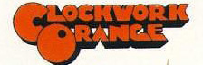

Katlic's Top 3 Movies

|

|
 |

|
Summary:
The film is narrated by an author, Gordie Lachance (Dreyfuss). After reading a newspaper article about the death of his friend,
Lachance recounts a childhood journey to find the body of a missing boy near the fictional town of Castle Rock, Oregon, over Labor Day weekend
in September 1959. Young Gordie (Wheaton) is a quiet, bookish boy with a penchant for writing and telling stories. He is rejected by his father
(Bell) after the death of his football-star older brother Denny (Cusack), who had paid more attention to Gordie than his parents did.
Gordie spends his time with three friends: Chris Chambers (Phoenix) who is from a family of criminals and alcoholics and is usually stereotyped
accordingly, even though he does not conform to the perceptions and stigmas attached to his family; Teddy Duchamp (Feldman) who is eccentric
and physically scarred after his mentally unstable father held his ear to a stove; and Vern Tessio (O'Connell) who is overweight, timid, and
often picked on.
Vern overhears his older brother Billy (Siemaszko) and his friend Charlie Hogan (Riley) talking about finding the body of Ray Brower while
dumping a stolen car. Brower was a boy whose disappearance and subsequent police search was a big news story in Castle Rock. Gordie, Chris,
Teddy, and Vern decide to embark upon a journey to see if they can find Ray's body and become local heroes.
The boys set out, first encountering Milo Pressman and his dog Chopper when they pause to fill their canteens from a well located in his
junkyard. They then walk along a train bridge and Vern and Gordie are nearly run over by a passing train. At the end of the day, the boys set
up camp and Gordie tells the boys a story of his invention. Later on in the night, Chris reveals to Gordie his fear of being stereotyped as a
criminal and never making anything of himself. They continue by taking a short-cut through a swamp only to discover that it is infested with
leeches. While desperately removing them from each other, Gordie faints after finding one in his underpants, causing the other boys to wonder
if they should go on. Gordie ends up being the decisive one, knowing that they have put in too much work not to see the body.
They locate the body and it reminds Gordie that his father liked his brother better than him. At this point, local bully "Ace" Merrill
(Sutherland) and his gang consisting of "Eyeball" Chambers (Gregg), Vince Desjardins, Charlie Hogan, Billy Tessio and two other hoods show
up in their cars to take the body, but Gordie threatens Ace with a handgun that Chris had brought. Gordie decides that no one will get credit
for finding the dead body and reports it via an anonymous phone call to the authorities. The boys return to Castle Rock and say goodbye to each
other.
Poster:
Copyright 2013